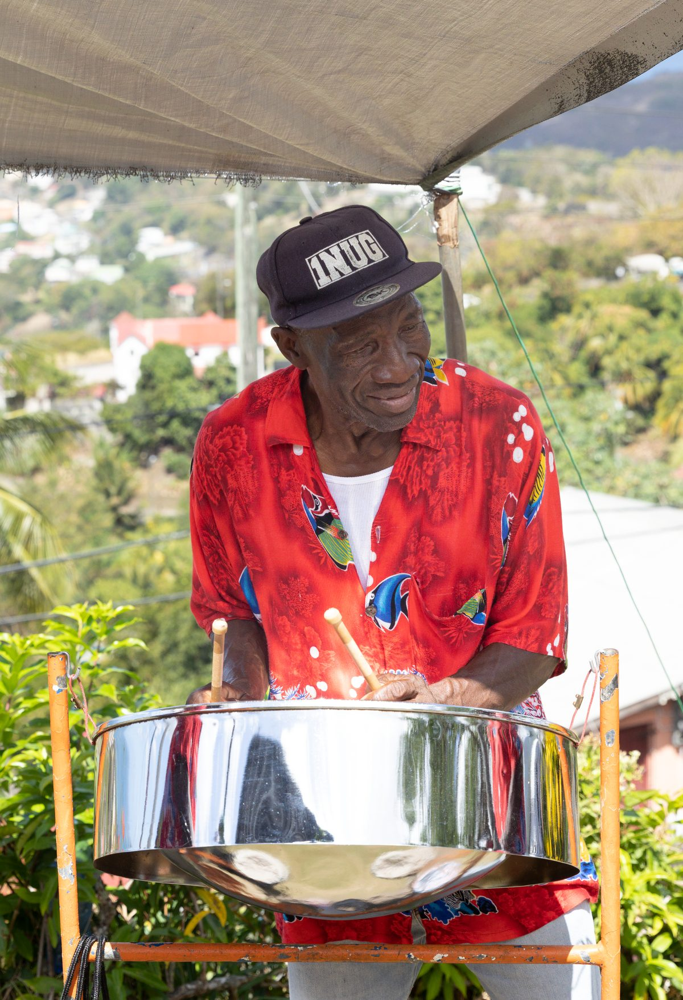

Register R.3 · Player & pans
The player, then the instruments

I started at eleven, in Harbourlight's junior section, on a tenor pan older than I was — which is normal: a good pan outlives several players. The junior section taught the way bands have always taught, by rote and by standing next to someone better, and I have kept that method in every workshop I run since.
Nineteen seasons later I play lead tenor and double seconds in the senior band, dep on guitar pan when a section is short, and keep this register — the band's book of instruments, engagements and tuning dates. Keeping the road is the unglamorous half of the trade: pans tuned before the season, racks checked, rain plans written in February for weather that arrives in August. It is also the half that decides whether the glamorous half happens at all.
Alongside the band I take solo tenor sets for events, lead school workshops across London, and play studio sessions on tenor and seconds. The family came from Grenada in the 1970s; the pans, give or take a re-blend, have been in London ever since.
Press kit · Bios, labelled by length
For programmes and listings
Two bios, written to be lifted as they stand. The short one fits a festival listing; the long one fits a programme note.
Marlon De Freitas is a London steelpan player — lead tenor and double seconds with Harbourlight Steel Orchestra. Nineteen carnival seasons on the road, festival stages across the UK, and school workshops that have put pans in the hands of more than a thousand pupils. He keeps the band's instrument register.
Marlon De Freitas began playing at eleven in the junior section of Harbourlight Steel Orchestra, learning by rote at the elbow of senior players — the method he still uses when he teaches. He now holds the tenor and double-seconds chairs in the senior band, deps on guitar pan, and keeps the orchestra's instrument register: every pan, its range, its tuner and its tuning dates. His seasons run from the February blend, through school workshop residencies and summer festival stages, to the August road at Leeds and Notting Hill carnivals. As a soloist he plays event sets on a single low-C tenor; as a session player he records on tenor and seconds, and has a standing rule — printed in the register — that a pan part must be written for a voice, not for “pan”. He teaches across London, where two of his former workshop pupils now play in Harbourlight's junior section.
The register itself
Every voice, its tuner, its dates
This is the page the whole design borrows from: the band's instruments entered with their ranges, their tuner, and the cost of keeping them true. A pan is not tuned once — hard playing, summer heat and road transport all move the notes, and a blend is the recurring price of sounding like a band.
| Voice | Pans | Range | Tuner | Last blend | Next due | Blend cost |
|---|---|---|---|---|---|---|
| Lead tenorLow C, chrome | 1 | C4 – E6 | R. Osei | Feb 2026 | Aug 2026 | £180 |
| Double secondsHarmony pair | 2 | F3 – C6 | R. Osei | Feb 2026 | Aug 2026 | £260 |
| Double guitarCello pans | 2 | C♯3 – F♯5 | R. Osei | Jan 2026 | Jul 2026 | £240 |
| Six bassThe semicircle | 6 | B1 – C4 | R. Osei + assistant | Feb 2026 | Aug 2026 | £540 |
| Classroom tenorsWorkshop set, school-owned | 10 | C4 – C6 | Tune-check only | Feb 2026 | Feb 2027 | £25 / pan |
Table scrolls sideways on small screens. Tuner and costs are the register's real working figures, printed because bookers ask what their fee pays for — this is part of it.
Working rules
Transport & weather, stated plainly
- Cases, always. Pans travel in padded cases, basses on the van's rack. A dented note area is a tuning bill, so the load is packed like one.
- Heat moves pitch. Pans are never left in a hot car boot or a sun-baked van; a pan that has cooked plays sharp until it settles.
- Rain means covers. Water sits in the note bowls and kills the pitch mid-tune. Outdoors, the band plays under cover or not at all — see the rain case in the register of engagements.
- Cold mornings play flat. Steel contracts; early sets in cold weather are tuned-check at arrival, not assumed.
- Ninety minutes early. Stage sets: arrival 90 minutes before, for the rack build, the line check and one full tune played standing where the audience will hear it.
The week, and the terms
Practice & booking terms
- Tuesdays — sectionals. Voices rehearse separately: tenors on the tune, seconds and guitars on the harmony figures, basses on the line.
- Thursdays — full band. The arrangement assembled; new tunes are learned by rote, part by part, in register order.
- August Sundays — road readiness. Playing while moving, on the racks, at route pace. A tune that only works standing still does not go on the road.
- Terms. Bookings are held on a 30% deposit, balance due seven days before the date. Cancellation inside 14 days forfeits the deposit; inside 72 hours, the full fee — the tuner and the van are booked by then. The band carries public liability insurance; certificates are in the register and sent with every confirmation.